BEBIDAS ENERGETIZANTES
Los jugos energéticos son uno de los mejores alimentos
para adquirir energía y mejorar la dieta. Estos tienen la cualidad de concentrar diversos alimentos, junto a sus proteínas en pequeños
simple vasos. Se toman de una manera rápida y amena tras su rápida creación.

Jugo de agua de coco
Este jugo será rico en potasio ya que su principal elemento será el agua que sale del coco.
A esta le añadiremos espirulina y alga, la cual es rica en grandes cantidades de proteínas, aminoácidos, potasio, magnesio y
vitamina B para conseguir una bebida que además de poseer altas dosis de energía, nos aportará un sabor cuanto menos, curioso y
por supuesto sabroso.
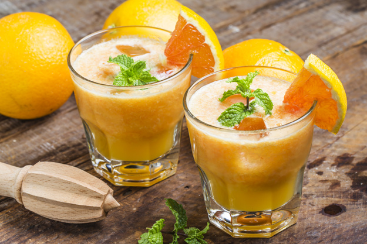
Jugo de naranja y lino
Este jugo sirve para reducir el colesterol malo, así como la presión arterial, preveniendo de
este modo problemas cardiovasculares, al mismo tiempo que es una rica fuente de vitamina C, la cual es perfecta para prevenir
los resfriados.
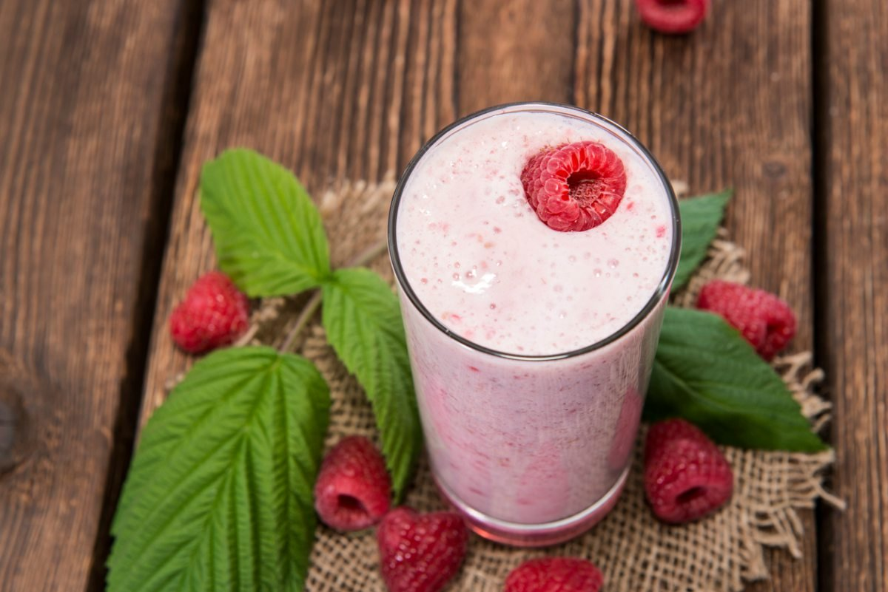
Batido de yogurt, frambuesa y almendra
Su preparación resulta completamente ideal (además de aportar energía) para
las mujeres con menopausia, ya que las almendras son una principal fuente de combate contra la osteoporosis.
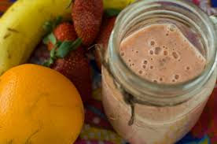
Batido de naranja, plátano y fresa
Esta sabrosa combinación tambien es muy conocida por ser antioxidante, con esta
bebida recibimos resultados de una mejor digestión, una disminución de la presión arterial y nos ayud a ayuda a saciarnos de
una manera más completa.
BEBIDAS REFRESCANTES
Además de ser refrescantes, al ser completamente
naturales estos jugos nos aportan un extra de vitaminas y nutrientes para fortalecer nuestro organismo y mejorar nuestra salud
general

Zumo de melocoton y pera
Está recomendado para personas con diabetes, o aquellas que estén haciendo dieta y quieran
disfrutar de los zumos más refrescantes. El melocotón es bajo en azúcares y tiene efecto saciante. Además es rico en fibras.
La buena noticia es que, aunque el melocotón sea laxante, se contrarresta con las propiedades astringentes de la pera.
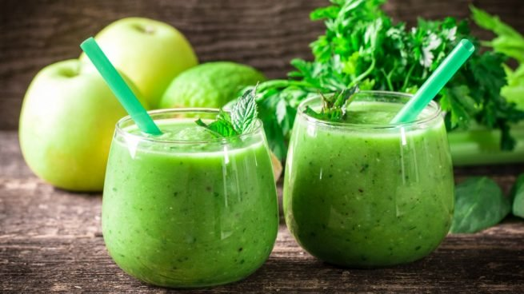
Zumo de manzana y kiwi
Los kiwis son extremadamente nutritivos a pesar de su pequeño tamaño.
Contienen una buena dosis de vitaminas y se pueden combinar con otras frutas fácilmente. En este caso lo haremos con la manzana (que
aporta fibra y es saciante) y la naranja.

Zumo de cerezas, granada y mango
La granada contiene antioxidantes que se combinan con los nutrientes de las cerezas y se
convierten en un potente tónico antiinflamatorio. En consecuencia, es ideal para aquellas personas que tienen artritis
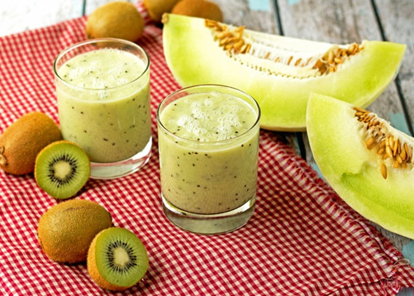
Zumo de melón, kiwi y pepino
Un rico zumo verde para comenzar el día. Te aportará vitamina C, mejorará tu salud hepática e
hidratará tu cuerpo por completo.
BEBIDAS PARA CONTRIBUIR A TU ABDOMEN PLANO
Los jugos de frutas y verduras que
mostramos a continuación están destinados a favorecer la quema de grasa abdominal para mostrar un vientre más plano y saludable. Eso sí,
antes de empezar a tomarlos resulta fundamental descartar cualquier problema de salud, puesto que el abdomen hinchado en ocasiones es
síntoma de que algo no anda bien, pudiendo tratarse de gastritis, estreñimiento o síndrome del color irritable, entre otros factores.

Jugo para bajar el abdomen de frambuesa, manzana y naranja
El jugo de frambuesa, manzana y naranja es un poderoso antioxidante
natural, lo que permite favorecer la eliminación de toxicas y líquidos acumulados. De esta forma, si el problema del abdomen hinchado
reside en una retención de líquidos, los zumos diuréticos como este son el remedio perfecto.
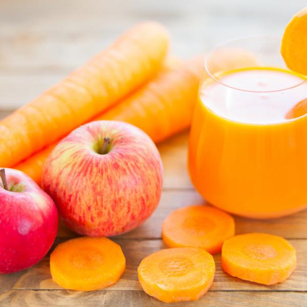
Jugo de zanahoria y manzana para tener un abdomen plano
Esta fruta tan popular en todo el mundo posee grandes propiedades
adelgazantes, especialmente la manzana verde, puesto que, además de ser rica en vitaminas y minerales, y pobre en grasa, contiene una
gran cantidad de fibra. Gracias a este aporte de fibra, la manzana ayuda a regular el tránsito intestinal.
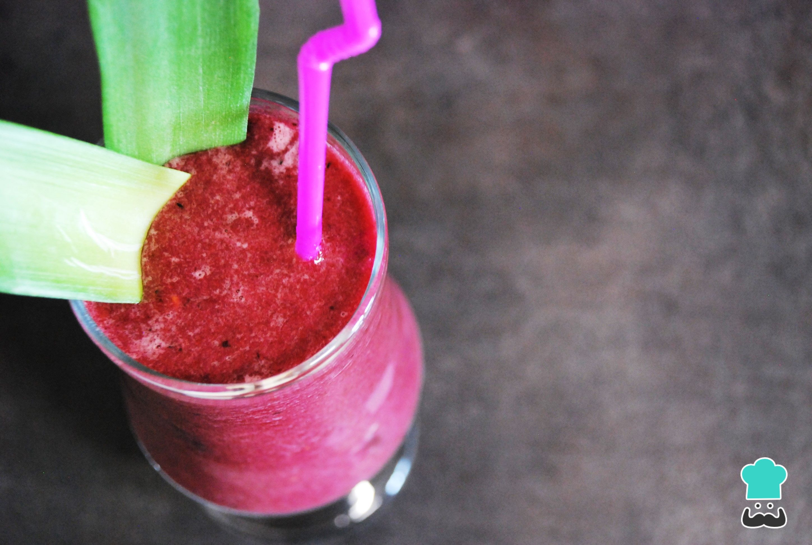
Jugo para quemar grasa del abdomen de arándanos
Los frutos rojos forman parte de la lista de los mejores alimentos para
obtener un vientre plano por su elevado contenido en antioxidantes y vitaminas, como la C y la E. Por ello, los arándanos son
perfectos para preparar jugos de frutas para quemar grasa del abdomen, además de deliciosos.
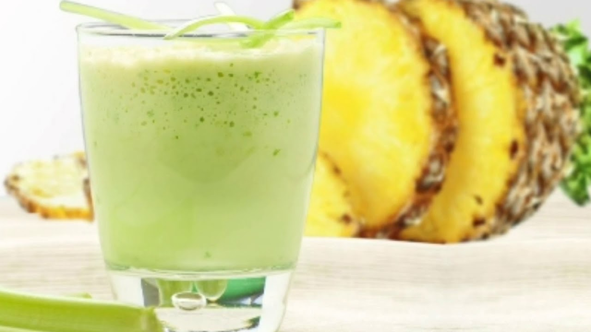
Jugo verde para desinflamar la panza de piña y apio
la piña destaca por su elevado poder antioxidante y diurético, de
manera que resulta un excelente remedio natural para adelgazar el abdomen y lucir un vientre plano.
BEBIDAS QUE CONTRIBUYEN A TU SALUD
Con el consumo de jugos y licuados
medicinales estás proporcionando a tu cuerpo nutrientes vitales, minerales y antioxidantes en una forma fácil de digerir. Todo
en ti prosperará, incluyendo tu sueño, tu felicidad, y la calidad de tu piel.

Licuado de arandano
Esto no sólo es bueno para tu salud, pero está lleno de antioxidantes, fitoquímicos y flavonoides,
que son vitales para la salud celular y la prevención de enfermedades.
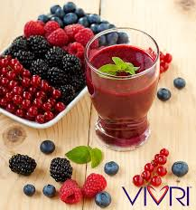
Batido de para drenar sistema linfático
El concentrado de arándano rojo es una manera maravillosa de mantener tu
vejiga libre de bacterias no deseadas de forma natural. Bonus: los arándanos son una gran fuente de vitamina C.
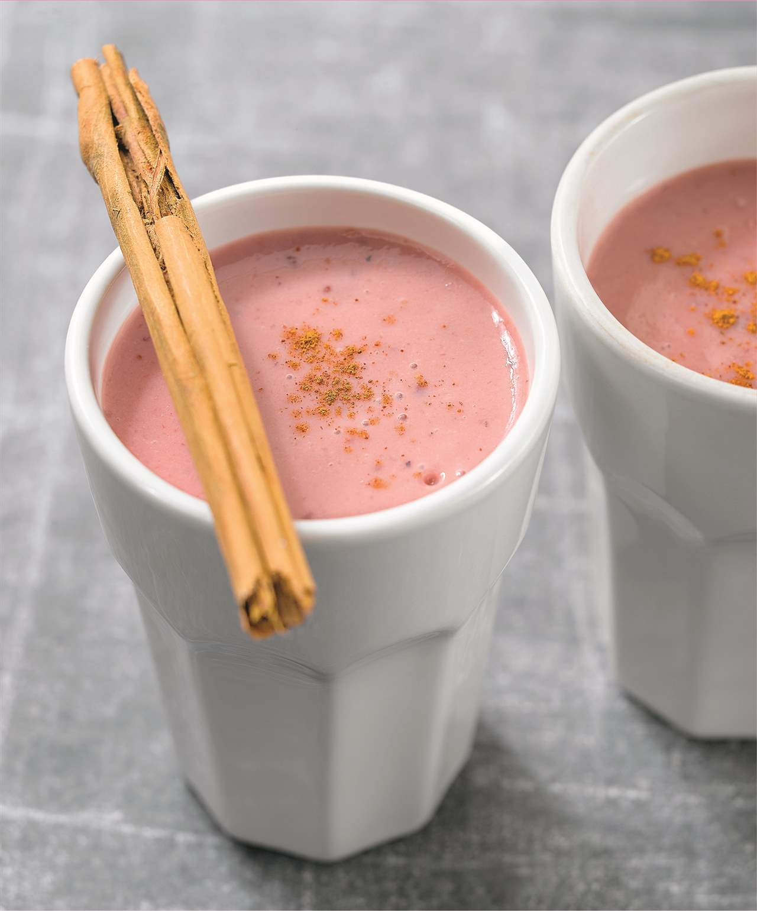
Licuado de moras y canela
Su preparación resulta completamente ideal (además de aportar energía) para
las mujeres con menopausia, ya que las almendras son una principal fuente de combate contra la osteoporosis.
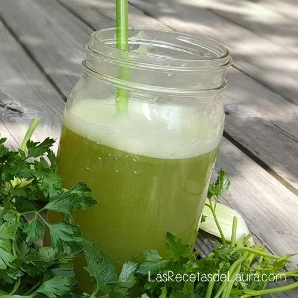
Jugo verde para limpiar intestino
Esto es muy bueno para cualquier persona con problemas digestivos,
ya que la manzana es una ayuda en la digestión y mejora la función intestinal.